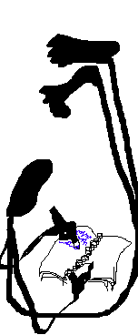

|
Sunday, July 19, 2026
Mini-workshop, "Memeostasis," and more
Oh my gosh! So much is going on, where to begin?
I write this from my daughter’s apartment. Yes, my daughter is so big
now she has an actual apartment, which I did not even move her into. I
just showed up for a visit and it was full of furniture and utensils
already. I am a guest in this apartment. There is a mixture of
satisfaction and vertigo in this.
My parents have moved to assisted living (a move punctuated by many
epic adventures), and there is a whole house in the suburbs to clean
out, a task which would easily fill a summer, and yet there is all this
other stuff happening, to wit:
Teaching
- Mary Anne Mohanraj and I are teaching an in-person weekend
summer mini-workshop near Chicago on August 15-16th (optional
welcome dinner on the 14th); that’s in one month! It will be a bunch of
short talks, seminars, excercises, with time to write, connect and be
rejuvenated. You
can sign up here.
- A class I taught for Clarion West Online, “Writing is Half the
Story: Theory and Praxis of Critique”, is now available as
an on-demand class on their site. It is a vaguely
cog-sci, practitioner’s view of what critique is, and thus how we should
approach it. Which, spoilers, is different from how I often see it
approached.
New Stuff
- My flash fiction story “Memeostasis”
is up at Lightspeed Magazine. It’s short, go read it! A friend
wrote to say it reminded him of “They’re Made
Out of Meat” by Terry Bisson. Then he wrote back to say that
actually it reminded him of “Manifesto:
The Mad Farmer Liberation Front” by Wendell Berry. I am delighted on
both counts, though I was only aware of borrowing the form from
Bisson.
- I have a couple more stories coming out next year:
“What It’s Like to Be Me,” a madcap satire of philosophy, generative AI,
and software development, will be in the 50th anniversary issue of
Asimov’s in March/April 2027; and “Disconnection,” a darker
(and kinkier) view of near-future AI (and fascism) troubles, will be out
in Reactor sometime or other in 2027, too.
- Podium’s audiobook version of The
Unraveling, read by Fred
Berman – originally released monopolistically as an Amazon
exclusive, which I grumbled about, but not enough not to take the deal –
is now also available in other
formats, including Spotify. I think more formats are coming? (Myself
I’m trying to get off Spotify and onto Qobuz, which pays artists better; but we
live in a fallen world, in which it is the game which is to be hated,
and not its players.)
- For the last couple of years, David
Moles and I have been working on a weird posthuman tabletop
roleplaying game, Numinous. We’re having a
public beta launch party at Worldcon this August! We’re looking for people to
test the game and report back: drop me a line if you’re interested.
Miscellaneous
- I gave a talk at Wiscon many years ago, entitled “Doctor Who as the
Wandering Jew,” which explains how Jewish culture arose
from its milennia-long material and social conditions, as well as being
an autobiographical essay on late-20th and early-21st century SF media
culture. I’ve now
put it up on Youtube here.
- At the Nebulas this year, I got to
present an award! I have never done this before,
and let me tell you, it is a delight. All the fun of being involved in
the ceremony with none of the nerve-wracking uncertainty of being
up for the award. You get to dress to the nines without
dithering (because you’re definitely going on stage), and you get to give a
speech, but the speech doesn’t have the pressure of being “your
moment” because you don’t want to steal the winners’ thunder – so it’s
more a speech to set up how it’s an important moment rather than
defining said moment. Also, I got to shout-out a contemporary
philosopher of games!
- As implied above, I will be at Worldcon this year! This is the
second time I’m doing a transcontinental train trip on
Amtrak to go to a Worldcon; last year, I went from DC to Seattle. This
year, I go to Chicago to teach the workshop, and then on to visit people
in Columbia MO, Albuquerque NM, possibly Vegas, and then Los Angeles. So
much better than flying! I should probably take some pictures this
time.
I cannot go outside my daughter’s apartment yet, because of the air
quality index. So far it is only Canadian forests burning, not yet data
centers, but I guess we’ll see. The ice shelves are collapsing, but
Australia is generating so much solar power that electricity is just
free in the middle of the day. The oligarchs’ power grab wears science
fiction clothing, but the spirit of Le Guin is marching among the
people. We’re racing towards an unimaginable future. Take heart.
Posted by Benjamin Rosenbaum at Sunday, July 19, 2026 at 13:24:47
| Up to blog
|